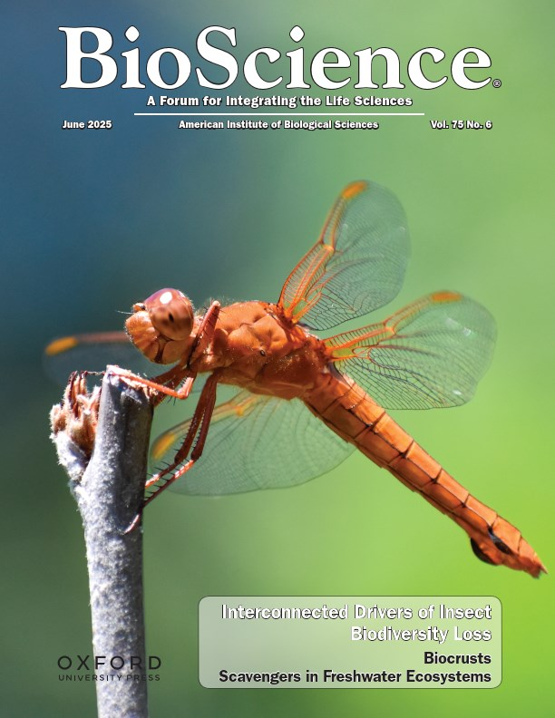
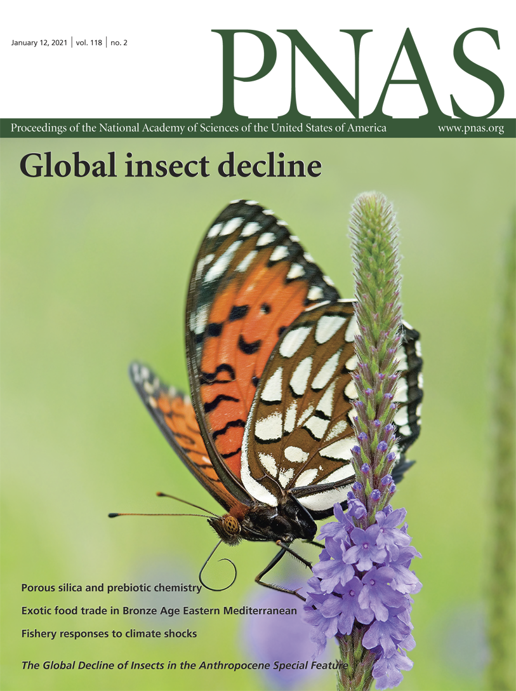

Under review
State of the world's insects report
A collection of seven articles, representing the work of more than 100 authors, that assesses the global status of insects, the threats they face, their ecological importance, and options for action. The series follows the framework of the Intergovernmental Science-Policy Platform on Biodiversity and Ecosystem Services and is designed to inform policymakers.
Grames, E.M., Halsch, C.A. (middle author), et al. The State of the World’s Insects: Summary for Policymakers. In prep.
Wagner, D.L., Halsch, C.A. (middle author), et al. The Global State of Insect Biodiveristy. In prep.
Halsch, C.A., et al. Drivers of Insect Decline: Direct, Indirect, and Interacting Pressures. In review.
Ware, J.L., Halsch, C.A. (middle author), et al. Insects and Quality of Human Life. In review.
Grames, E.M., Halsch, C.A. (middle author), et al. Insects’ Contributions to People: The role insects play in supporting and regulating ecosystem functions and provisioning ecosystem services. In review.
Bahlai, C.A., Halsch, C.A. (middle author), et al. Future Pathways: Projecting insect responses to global change. In review.
Elphick, C.S., Halsch, C.A. (middle author), et al. Options for action and policy to conserve insects. In prep.
Halsch, C.A., Forister, M.L., Grames, E.M. Dispersal mediates metapopulation response to local and regional stressors. In review. [preprint]
2026
Cushman, J.H., Macdonald, J.A.,Halsch, C.A., Refsland, T.K., Steed, B.E., Dilts, T.E. (2026) Decadal Drivers of Quaking Aspen Decline in the Western United States. Journal of Ecology In press
Halsch, C.A., Nice, C.C., Bell, K.L., Fordyce, J.A., Forister, M.L., Garcia-Costoya, G., Shapiro, A.M., Grames, E.M. (2026) Allochronic isolation between sympatric populations of an alpine butterfly. Evolution 80(5):1102-1110 [pdf]
Foster, E.M., Dombroskie, J.J., Halsch, C.A., Powell, T.H.Q., Grames, E.M. (2026) Phenological shifts and increases in voltinism within a moth community over a century of anthropogenic change. Ecology 107:e70297 [pdf]
Reis, G.A., Forister, M.L., Halsch, C.A., Dittemore, C.M., Shapiro, A.M., Gompert, Z. (2026) Temporal occupancy distributions reveal diverse responses to climatic variation in montane butterflies. Ecology 107:e70328 [pdf]
2025
Christensen, T., Halsch, C.A., Dyer, L. Smilanich, A.M., Shapiro, A.M., Forister, M.L. (2025) Specialized flower visitation in montane butterflies is associated with positive population trajectories over time. Ecology 106:e70236. [pdf]
Dittemore, C.M., Anderson, A., Code, A., Lenard, A., Douglas, M.R., Halsch, C.A., Forister, M.L. (2025) Pesticide contamination of two urban areas has implications for insect conservation and green space management. Environmental Toxicology and Chemistry. [pdf]
Halsch, C.A., Shapiro, A.M., Forister, M.L., Grames, E.M. (2025) Shifting baselines in North America’s longest-running butterfly monitoring program. Conservation Letters 18:e13116. [pdf]
Halsch, C.A., Elphick, C.S., Bahlai, C.A., Forister, M.L., Wagner, D.L., Ware, J.L., Grames, E.M. (2025) Meta-synthesis reveals interconnections among drivers of insect biodiversity loss. Bioscience 75:448-456. [pdf]
2024
Halsch, C.A., Shapiro, A.M., Thorne, J.H., Rodman, K.C., Parra, A., Dyer, L.A., Gompert, Z., Smilanich A.M., and Forister, M.L. (2024) Thirty-six years of butterfly monitoring, snow cover, and plant productivity reveal negative impacts of warmer winters and increased productivity on montane species. Global Change Biology 30:e17044. [pdf]
2023
Forister, M.L., Grames, E.M., Halsch, C.A., Burls, K.J., Carroll, C.F., Bell, K.L., Jahner, J.P., Bradford, T., Zhang, J., Cong, Q., Grishin, N.V., Glassberg, J., Shapiro, A.M., and Riecke, T.V. (2023) Assessing risk for butterflies in the context of climate change, demographic uncertainty, and heterogenous data sources. Ecological Monographs 93:e1584. [pdf]
Halsch, C.A., Zullo, D., and Forister, M.L. (2023) Additive and interactive pressures of anthropogenic stressors on an insect herbivore. Proceedings of the Royal Academy B 290: 2022243. [pdf]
Forister, M.L., Black, S., Elphick, C. Grames, E., Halsch, C.A., Schultz, C., and Wagner, D. (2023) Missing the bigger picture: why insect monitoring programs are limited in their ability to document the effects of habitat loss. Conservation Letters 16:e12951. [pdf]
2022
Halsch, C.A., Hoyle, S.M., Code, A., Fordyce, J.A., Forister, M.L. (2022) Milkweed plants bought at nurseries may expose monarch caterpillars to harmful pesticide residues. Biological Conservation 273: 109699. [pdf]
2021
Forister, M.L., Halsch, C.A., Nice, C.C., Fordyce, J.A., Dilts, T.E., Oliver, J.C., Prudic, K.L., Shapiro, A.M., Wilson, J.K., and Glassberg, J. (2021) Fewer butterflies seen by community scientists across the warming and drying landscapes of the American West. Science 371:1042-1045. [pdf]
Halsch, C.A., Shapiro, A.M., Fordyce, J.A., Nice, C.C., Thorne, J.H., Waetjen, D.P., and Forister, M.L. (2021) Insects and recent climate change. Proceedings of the National Academy of Sciences 118:e2002543117. [pdf]
2020
Halsch, C.A., Code, A., Hoyle, S.M., Fordyce, J.A., Baert, N., and Forister, M.L. (2020) Pesticide contamination of milkweeds across the agricultural, urban and open spaces of low elevation Northern California. Frontiers in Ecology and Evolution 8:Article 162. [pdf]
Halsch, C.A., Shapiro, A.M., Thorne, J.H., Waetjen, D.P., and Forister, M.L. (2020) A winner in the Anthropocene: changing host plant distribution explains geographic range expansion in the gulf fritillary butterfly. Ecological Entomology 45:652-662. [pdf]
2019
Kimball, S., Long, J.J., Ludovise, S., Ta, P., Schmidt, K.T., Halsch, C.A., et al. (2019) Impacts of competition and herbivory on native plants in a community‐engaged, adaptively managed restoration experiment. Conservation Science and Practice 1:e122. [pdf]
2017
Tamura, N., Lulow, M.E., Halsch, C.A., Major, M.R., Balazs, K.R., Austin, P., et al. (2017) Effectiveness of seed sowing techniques for sloped restoration sites. Restoration Ecology 25:942-952. [pdf]

